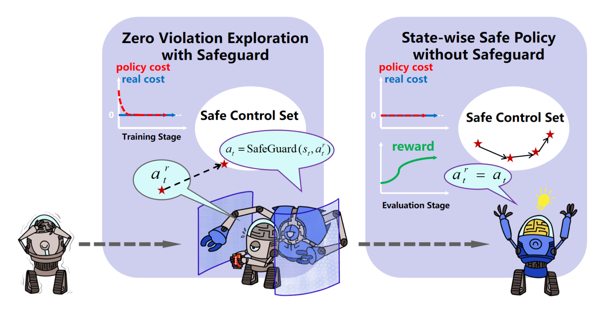

| CV |
Email |
Google Scholar |
|
I am a first year Ph.D. student at the Robotics Institute at Carnegie Mellon University, advised by Changliu Liu. I received my Bachelor's degree in Mechanical Engineering at Xi'an Jiaotong University and got my Masters's drgess in Mechanical Engineering at CMU. I also had the pleasure of completing two summer internships at Zoox and Siemens. Email: yifansu2@andrew.cmu.edu |

|
abstract |
bibtex |
arXiv
The control of legged robots, particularly humanoid and quadruped robots, presents significant challenges due to their high-dimensional and nonlinear dynamics. While linear systems can be effectively controlled using methods like Model Predictive Control (MPC), the control of nonlinear systems remains complex. One promising solution is the Koopman Operator, which approximates nonlinear dynamics with a linear model, enabling the use of proven linear control techniques. However, achieving accurate linearization through data-driven methods is difficult due to issues like approximation error, domain shifts, and the limitations of fixed linear state-space representations. These challenges restrict the scalability of Koopman-based approaches. This paper addresses these challenges by proposing a continual learning algorithm designed to iteratively refine Koopman dynamics for high-dimensional legged robots. The key idea is to progressively expand the dataset and latent space dimension, enabling the learned Koopman dynamics to converge towards accurate approximations of the true system dynamics. Theoretical analysis shows that the linear approximation error of our method converges monotonically. Experimental results demonstrate that our method achieves high control performance on robots like Unitree G1/H1/A1/Go2 and ANYmal D, across various terrains using simple linear MPC controllers. This work is the first to successfully apply linearized Koopman dynamics for locomotion control of high-dimensional legged robots, enabling a scalable model-based control solution.
@article{li2024continual,
title={Continual Learning and Lifting of Koopman Dynamics for Linear Control of Legged Robots},
author={Li, Feihan and Abuduweili, Abulikemu and Sun, Yifan and Chen, Rui and Zhao, Weiye and Liu, Changliu},
journal={arXiv preprint arXiv:2411.14321},
year={2024}
}
|

|
youtube |
abstract |
bibtex |
arXiv
Lego is a well-known platform for prototyping pixelized objects. However, robotic Lego prototyping (i.e., manipulating Lego bricks) is challenging due to the tight connections and accuracy requirements. This paper investigates safe and efficient robotic Lego manipulation. In particular, this paper reduces the complexity of the manipulation by hardware-software co-design. An end-of-arm tool (EOAT) is designed, which reduces the problem dimension and allows large industrial robots to manipulate small Lego bricks. In addition, this paper uses evolution strategy to optimize the robot motion for Lego manipulation. Experiments demonstrate that the EOAT can reliably manipulate Lego bricks and the learning framework can effectively and safely improve the manipulation performance to a 100% success rate. The co-design is deployed to multiple robots (i.e., FANUC LR-mate 200id/7L and Yaskawa GP4) to demonstrate its generalizability and transferability. In the end, we show that the proposed solution enables sustainable robotic Lego prototyping, in which the robot can repeatedly assemble and disassemble different prototypes.
@inproceedings{liu2024lightweight,
title={A lightweight and transferable design for robust lego manipulation},
author={Liu, Ruixuan and Sun, Yifan and Liu, Changliu},
booktitle={International Symposium on Flexible Automation},
volume={87882},
pages={V001T07A004},
year={2024},
organization={American Society of Mechanical Engineers}
}
|

|
abstract |
bibtex |
arXiv
In recent years, trust region on-policy reinforcement learning has achieved impressive results in addressing complex control tasks and gaming scenarios. However, contemporary state-of-the-art algorithms within this category primarily emphasize improvement in expected performance, lacking the ability to control over the worst-case performance outcomes. To address this limitation, we introduce a novel objective function, optimizing which leads to guaranteed monotonic improvement in the lower probability bound of performance with high confidence. Building upon this groundbreaking theoretical advancement, we further introduce a practical solution called Absolute Policy Optimization (APO). Our experiments demonstrate the effectiveness of our approach across challenging continuous control benchmark tasks and extend its applicability to mastering Atari games. Our findings reveal that APO as well as its efficient variation Proximal Absolute Policy Optimization (PAPO) significantly outperforms state-of-the-art policy gradient algorithms, resulting in substantial improvements in worst-case performance, as well as expected performance.
@inproceedings{zhaoabsolute,
title={Absolute Policy Optimization: Enhancing Lower Probability Bound of Performance with High Confidence},
author={Zhao, Weiye and Li, Feihan and Sun, Yifan and Chen, Rui and Wei, Tianhao and Liu, Changliu},
booktitle={Forty-first International Conference on Machine Learning}
}
|

|
abstract |
bibtex |
arXiv
Reinforcement Learning (RL) algorithms have shown tremendous success in simulation environments, but their application to real-world problems faces significant challenges, with safety being a major concern. In particular, enforcing state-wise constraints is essential for many challenging tasks such as autonomous driving and robot manipulation. However, existing safe RL algorithms under the framework of Constrained Markov Decision Process (CMDP) do not consider state-wise constraints. To address this gap, we propose State-wise Constrained Policy Optimization (SCPO), the first general-purpose policy search algorithm for state-wise constrained reinforcement learning. SCPO provides guarantees for state-wise constraint satisfaction in expectation. In particular, we introduce the framework of Maximum Markov Decision Process, and prove that the worst-case safety violation is bounded under SCPO. We demonstrate the effectiveness of our approach on training neural network policies for extensive robot locomotion tasks, where the agent must satisfy a variety of state-wise safety constraints. Our results show that SCPO significantly outperforms existing methods and can handle state-wise constraints in high-dimensional robotics tasks.
@article{zhao2023state,
title={State-wise constrained policy optimization},
author={Zhao, Weiye and Chen, Rui and Sun, Yifan and Wei, Tianhao and Liu, Changliu},
journal={arXiv preprint arXiv:2306.12594},
year={2023}
}
|

|
code |
abstract |
bibtex |
arXiv
Due to the trial-and-error nature, it is typically challenging to apply RL algorithms to safety-critical real-world applications, such as autonomous driving, human-robot interaction, robot manipulation, etc, where such errors are not tolerable. Recently, safe RL (i.e. constrained RL) has emerged rapidly in the literature, in which the agents explore the environment while satisfying constraints. Due to the diversity of algorithms and tasks, it remains difficult to compare existing safe RL algorithms. To fill that gap, we introduce GUARD, a Generalized Unified SAfe Reinforcement Learning Development Benchmark. GUARD has several advantages compared to existing benchmarks. First, GUARD is a generalized benchmark with a wide variety of RL agents, tasks, and safety constraint specifications. Second, GUARD comprehensively covers state-of-the-art safe RL algorithms with self-contained implementations. Third, GUARD is highly customizable in tasks and algorithms. We present a comparison of state-of-the-art safe RL algorithms in various task settings using GUARD and establish baselines that future work can build on.
@article{zhao2023guard,
title={Guard: A safe reinforcement learning benchmark},
author={Zhao, Weiye and Sun, Yifan and Li, Feihan and Chen, Rui and Liu, Ruixuan and Wei, Tianhao and Liu, Changliu},
journal={arXiv preprint arXiv:2305.13681},
year={2023}
}
|

|
abstract |
bibtex |
arXiv
Incremental motion planning has emerged as a powerful approach for generating safe trajectories in confined environments. However, its effectiveness can be hampered by susceptibility to local optima. This vulnerability arises from the algorithm's heavy dependence on the previously achieved configuration (pose) as a reference for the next step. This paper presents a novel incremental motion planning approach for redundant robot arms. It leverages an optimization-based planner combined with null-space exploration to escape local optima and generate high-quality trajectories satisfying task and collision constraints. Our approach is evaluated in an onsite polishing scenario with various robot and workpiece configurations, demonstrating significant improvements in trajectory quality compared to existing methods. The proposed approach has the potential for broad applications in industrial tasks involving redundant robot arms.
@inproceedings{sun2024hybrid,
title={Hybrid Task Constrained Incremental Planner for Robot Manipulators in Confined Environments},
author={Sun, Yifan and Zhao, Weiye and Liu, Changliu},
booktitle={2024 American Control Conference (ACC)},
pages={3847--3852},
year={2024},
organization={IEEE}
}
|
|  |
abstract |
bibtex |
arXiv
Deep reinforcement learning (RL) excels in various control tasks, yet the absence of safety guarantees hampers its real-world applicability. In particular, explorations during learning usually results in safety violations, while the RL agent learns from those mistakes. On the other hand, safe control techniques ensure persistent safety satisfaction but demand strong priors on system dynamics, which is usually hard to obtain in practice. To address these problems, we present Safe Set Guided State-wise Constrained Policy Optimization (S-3PO), a pioneering algorithm generating state-wise safe optimal policies with zero training violations, i.e., learning without mistakes. S-3PO first employs a safety-oriented monitor with black-box dynamics to ensure safe exploration. It then enforces an "imaginary" cost for the RL agent to converge to optimal behaviors within safety constraints. S-3PO outperforms existing methods in high-dimensional robotics tasks, managing state-wise constraints with zero training violation. This innovation marks a significant stride towards real-world safe RL deployment.
@article{li2023learn,
title={Learn with imagination: Safe set guided state-wise constrained policy optimization},
author={Li, Feihan and Sun, Yifan and Zhao, Weiye and Chen, Rui and Wei, Tianhao and Liu, Changliu},
journal={arXiv preprint arXiv:2308.13140},
year={2023}
}
|
|
|
Ruixuan Liu, Yifan Sun, Changliu Liu
ACC Workshop on Recent Advancement of Human Autonomy Interaction and Integration, 2023
This paper studies automatic prototyping using LEGO. To satisfy individual needs and self-sustainability, this paper presents a framework that learns the assembly and disassembly sequences from human demonstrations. In addition, a digital twin is developed to verify the correctness of robot learning before deploying to the real world. Moreover, an end-effector tool (EOT) is designed, which allows large industrial robots to easily manipulate LEGO bricks. The proposed system is deployed to a FANUC LR-mate 200id/7L robot. Experiments demonstrate that the proposed system can effectively learn the assembly and disassembly tasks from human demonstrations. And the learned tasks are realized by the FANUC robot.
@article{liu2023robotic,
title={Robotic lego assembly and disassembly from human demonstration},
author={Liu, Ruixuan and Sun, Yifan and Liu, Changliu},
journal={arXiv preprint arXiv:2305.15667},
year={2023}
}
Ruixuan Liu, Rui Chen, Yifan Sun, Yu Zhao, Changliu Liu
IEEE/ASME International Conference on Advanced Intelligent Mechatronics (AIM), 2022
Industrial robots are widely used in many applications with structured and deterministic environments. However, the contemporary need requires industrial robots to intelligently operate in dynamic environments. It is challenging to design a safe and efficient robotic system with industrial robots in a dynamic environment for several reasons. First, most industrial robots require the input to have specific formats, which takes additional efforts to convert from task-level user commands. Second, existing robot drivers do not support overwriting ongoing tasks in real-time, which hinders the robot from responding to the dynamic environment. Third, most industrial robots only expose motion-level control, making it challenging to enforce dynamic constraints during trajectory tracking. To resolve the above challenges, this paper presents a jerk-bounded position control driver (JPC) for industrial robots. JPC provides a unified interface for tracking complex trajectories and is able to enforce dynamic constraints using motion-level control, without accessing servo-level control. Most importantly, JPC enables real-time trajectory modification. Users can overwrite the ongoing task with a new one without violating dynamic constraints. The proposed JPC is implemented and tested on the FANUC LR Mate 200id/7L robot with both artificially generated data and an interactive robot handover task. Experiments show that the proposed JPC can track complex trajectories accurately within dynamic limits and seamlessly switch to new trajectory references before the ongoing task ends.
@inproceedings{liu2022jerk,
title={Jerk-bounded position controller with real-time task modification for interactive industrial robots},
author={Liu, Ruixuan and Chen, Rui and Sun, Yifan and Zhao, Yu and Liu, Changliu},
booktitle={2022 IEEE/ASME International Conference on Advanced Intelligent Mechatronics (AIM)},
pages={1771--1778},
year={2022},
organization={IEEE}
}